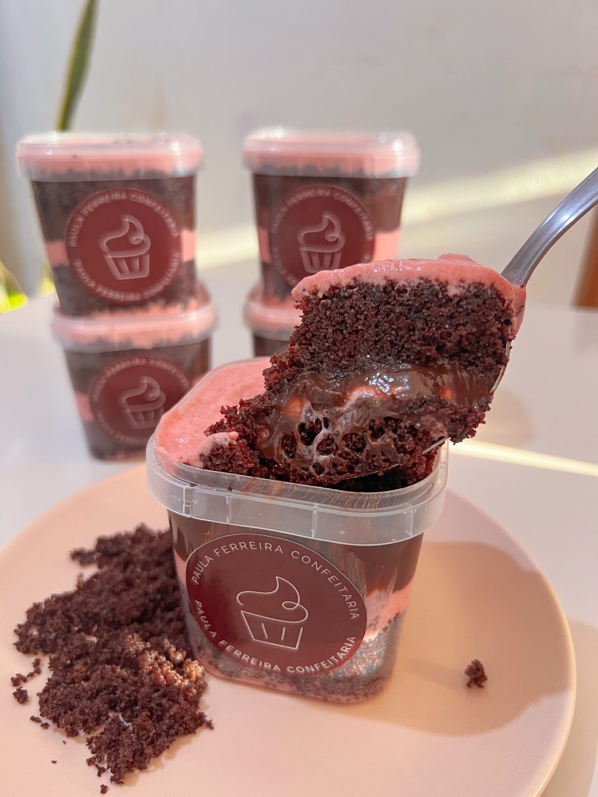
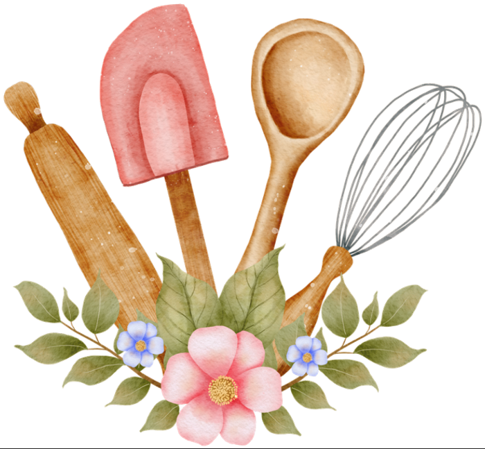
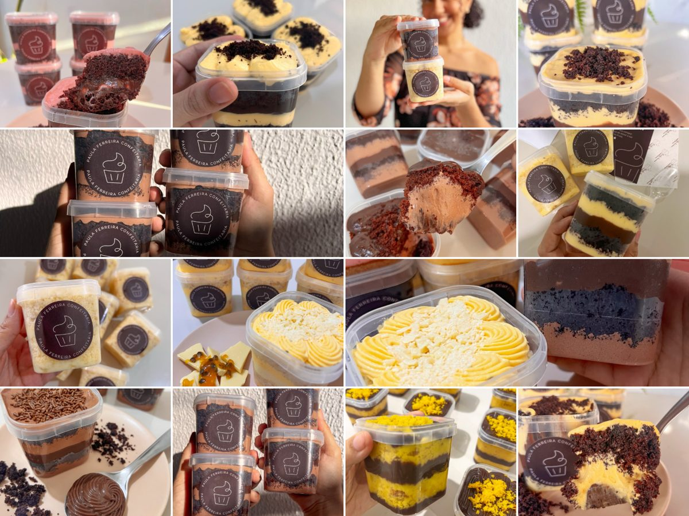

Paula Ferreira Confeitaria
O bolo de pote que cabe na sua cozinha, na sua rotina e no seu delivery.
5 receitas, 2 massas, recheios de baixo custo e o método de produção solo que a Paula usa para vender em casa, sozinha, sem ser engolida pelo trabalho.
QUERO O E-BOOK POR R$ 54,90Acesso imediato · Pagamento seguro

Você já se sentiu assim?
- Sou apaixonada pelo meu trabalho, mas minha vida não pode ser só ele.
- Empreender sozinha é um grande desafio. TUDO é a gente.
- Aí a gente entra na internet e vê outras confeiteiras com dezenas de opções no cardápio, e pensa: “Preciso fazer isso também!”
- Por muito tempo eu tentei acompanhar um ritmo de produção e “novidades” que me deixava esgotada.
Foi aí que eu percebi que não preciso ter uma produção gigantesca e um cardápio imenso.
Não preciso tentar acompanhar um ritmo que me destrói, me frusta e faz eu me sentir fracassada no que faço. NÃO PRECISO!
Meu negócio é pequeno, porém lucrativo e organizado, ainda assim, pequeno.
Passei a trabalhar de uma forma mais inteligente e não a trabalhar MAIS.
E o meu bolo de pote é fundamental nessa estrutura.
Na era das fatias enormes com mil opções de recheios, o ancião dos bolos é a minha carta coringa ✨
2 massas
Chocolate e baunilha sustentam os 5 sabores.
Compra enxuta e estratégica
Menos itens na despensa, menos desperdício.
Recheios de baixo custo
Ótimo rendimento em cada receita.
Produção simples
Que não te engole.

O que você recebe
5 receitas de bolo de pote, cada uma com massa, recheios, calda e montagem.
-
Bolo Chocomara
Massa de chocolate, mousse de maracujá e brigadeiro cremoso.
-
Bolo Chocomousse
Massa de chocolate, mousse de chocolate e brigadeiro cremoso.
-
Bolo Sensação
Massa de chocolate, mousse de morango e brigadeiro cremoso.
-
Ninho com Maracujá
Massa de baunilha, mousse de maracujá e brigadeiro de Ninho.
-
Bolo de Abacaxi
Massa de baunilha, abacaxi caramelizado e recheio cremoso de abacaxi.
-
Estratégias de Produção
Para uma produção organizada e eficiente, mesmo com pouco tempo e espaço.
-
Compras dos ingredientes
Como fazer as compras de forma inteligente.
- Ingredientes em gramas
- Passo a passo da massa e dos recheios
- Calda para regar a massa
- Montagem camada por camada, com o peso de cada uma
- Rende até 10 potes de 220 ml
Você vai precisar só de
Batedeira, liquidificador, forno, balança e mangas de confeitar. Nada profissional.

Muito mais que uma receita
Quem adquire um material meu sempre tem acesso a muito mais que uma receita. O e-book de bolos não será diferente.
Para quem é
- Quem vende, ou quer vender, bolo de pote em casa.
- Confeiteiras que se sentem engolidas por um cardápio grande.
- Quem tem rotina apertada, pouco espaço e muita vontade de fazer dar certo.
- Quem prefere começar enxuta.
Acesso imediato · Pagamento seguro
Oiê, eu sou a Paula!
Confeiteira · Desde 2020
Trabalho em casa, sou mãe, esposa e produzo sozinha, em uma estrutura pequena. Por vezes me comparei com quem tem equipe e cozinha profissional, alguém fora da minha realidade.
Ninguém me ensinou. Trilhei esse caminho sozinha. Desisti uma vez, mas retornei, e hoje posso dizer que é possível.
Em casa, com filho de 3 anos, pouco espaço e MUITA vontade de fazer dar certo. E tem dado, viu? ❤️
Um erro que não cometo mais: aprendi a olhar para o MEU NEGÓCIO e para a MINHA REALIDADE. O que posso fazer com o que tenho HOJE?
7 dias de garantia
Compra 100% segura.
Perguntas frequentes
Preciso ter experiência?
Não. As receitas são simples, com passo a passo e medidas em gramas.
Preciso de equipamento profissional?
Não. Você usa batedeira, liquidificador, forno, balança e mangas de confeitar.
Quantos potes rende cada receita?
Cada receita rende até 10 potes de 220 ml.
Como recebo o e-book?
Depois da compra, você recebe o acesso ao e-book pelo e-mail do cadastro.
Se você acredita que minha experiência e conhecimento podem te fazer crescer, separe R$ 54,90.
Será um imenso prazer te ter como aluna!
Acesso imediato · Pagamento seguro